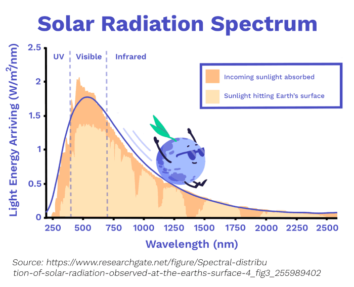

To Educate Our Society about Nuclear Technology
Sign Up
Be the first to know about the latest updates and get exclusive offer on our grand opening.
Nuclear Energy Vs Other Sources
To Educate Our Society about Nuclear Technology
Solar Power: How to Effectively Harvest the Power of the Sun
It is mentioned that, in 1 hour, sunlight hits the Earth with more energy than is consumed worldwide in a year. Before we dive into how we can turn this into useful energy, let’s talk about light.
What is light really?
Well, in the simplest terms, light is a packet of energy. But exactly what this means isn’t simple at all, so we can generally think of light as a wave.
The distance between the peaks of the wave is called its wavelength. Red light has a wavelength of around 700 nanometres (700 billionths of a metre) while blue light has a wavelength of around 450 nanometres:
The full set of wavelengths is called the Electromagnetic Spectrum. Only a small part of it is the visible light we see:
The sun emits all wavelengths of light in this spectrum, but by different amounts
Three methods are used to harvest the sun's energy
- 1. Solar Thermal: using the sun's thermal energy for heating and/or electricity generation.
- 2. Solar Photovoltaics (PV): directly generating electricity from sunlight.
- 3. Chemical Solar: building machines that mimic photosynthesis, the process by which plants convert light energy into chemical energy.
Is solar substainable?
What happens after those 25 to 30 years when the panels stop working? Sadly, that’s largely an open question. To prepare for when the solar panels built today become waste, we need to develop affordable large-scale recycling methods.
Additionally, making solar PV panels requires rare earth metals. Mining for these resources can harm ecosystems and result in biodiversity loss which is why conservation plans for these sites need to identify and manage these threats effectively.
3. Nuclear Energy perform better than solar energy because:
Wind Power: Potentially the Greatest Opportunities for Clean Energy
Today, wind provides about 7% of the total global electricity supply. In this page, we’ll take a look at what we can do to increase this. But before that, let’s explore how wind power works.
Wind power comes from large wind turbines, which turn the kinetic energy of wind into electrical energy.
Most turbines have two or three blades, which are designed to spin when the wind hits them from a particular angle. These blades then spin a rotor which, just like a fossil fuel power station, powers a generator to produce electricity by moving wires in a magnetic field.
How do we go about improving wind turbines?
There are two important numbers we need to look at:
- Rated power: Turbines make more power when the wind is faster. But at some point this stops and faster wind won’t lead to more energy. This point is called the rated power - and the higher it is, the better!
- Capacity factor: This is the fraction of time a turbine is running at its rated power. If we build a turbine in a region with little wind, it will rarely reach its rated power. Therefore it will have a low capacity factor. Currently, onshore wind turbines only operate with a capacity factor of 34%.
Until we increase this number, wind won’t be able to provide us with a stable supply of energy, unless we find a way to store extra energy for us to use when the wind’s not blowing.
4. Overall Nuclear Energy is better compared to wind energy because:
In fact, nuclear accidents are extremely unlikely and altogether have higher energy efficiency.
Hydropower: Is the Flow of Rivers Enough to Power the World?
Water on Earth is constantly moving: rain pouring, rivers flowing, glaciers melting. All this movement provides some huge opportunities to harvest energy.
HEP may not get as much attention as wind and solar, but it is by far our biggest source (55%) of renewable electricity today. It also accounts for about 16% of our overall electricity production.
5. HEP sounds great. But there are also some serious downsides that need to be considered compared to nuclear Energy?